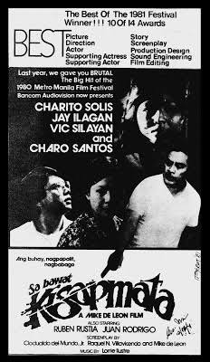
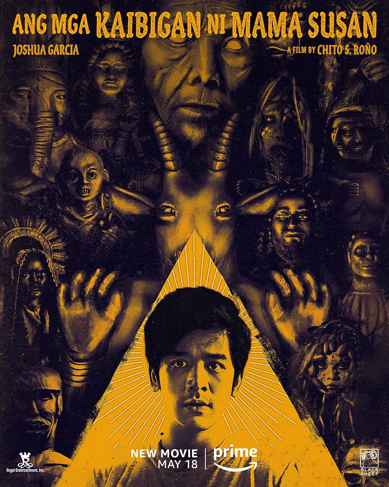

Movie Reviews
Maynila: Sa Kuko ng Liwanag
Lino Brocka
Maynila sa Kuko ng Liwanag follows Julio Madiaga, a young man who searches for his lost girlfriend in the corrupt and brutal underworld of Manila. The film explores themes of poverty, exploitation, and social injustice.

Kisapmata
Mike de Leon
Kisapmata (1981), directed by Mike de Leon, is a psychological thriller about a controlling father who becomes obsessively fixated on his daughter after intense family conflicts. The film explores themes of control, paranoia, and the destructive effects of authority and repression within a family.
Buybust
Erik Matti
BuyBust (2018) is an action-thriller about a special police unit trapped in a Manila slum during a botched drug raid, fighting for survival against ruthless criminals. It highlights themes of corruption and the brutal realities of the drug war.
Hello, Love, Again
Cathy Garcia Sampana
Hello, Love, Again (2024), directed by Cathy Garcia-Molina, is the sequel to Hello, Love, Goodbye. It follows Joy (Kathryn Bernardo) as she heals from a breakup and finds new love with Ethan (Alden Richards). The film explores themes of healing, second chances, and the complexities of love and forgiveness.

Ang mga Kaibigan ni Mama Susan
Chito Rono
Ang Mga Kaibigan ni Mama Susan (2022) is a Filipino horror film directed by Chito S. Roño. Based on the novel by Bob Ong, the story follows a young man named Galo who uncovers unsettling truths about his grandmother’s mysterious friends and their dark secrets. The film blends suspense and supernatural elements as it explores themes of family, fear, and the unknown.

Lolo and the Kid
Benedict Micque
Lolo and the Kid (2022) is a Filipino drama film that tells the heartwarming story of a young boy and his grandfather, who develop a deep bond despite their generational differences. As they navigate life's challenges together, the film explores themes of family, love, and the importance of intergenerational relationships.
Lumayo ka Nga Sa Akin
Mark Meily, Andoy Ranay and Chris Martinez
Lumayo Ka Nga Sa Akin (2022) is a Filipino romantic comedy about a man who, after a series of failed relationships, meets a woman who seems perfect but turns out to be more challenging than he anticipated. The film explores themes of love, heartache, and self-discovery in a humorous yet heartfelt way.
Himala
Ishmael Bernal
Himala (1982), directed by Ishmael Bernal, stars Nora Aunor as Nora, a young woman who claims to have witnessed a miracle, causing a religious frenzy in her village. As people flock to her, Nora grapples with the pressure of faith, expectation, and exploitation. The film explores belief, sacrifice, and human nature, and is considered a classic of Philippine cinema.

White Lady
Jeff Tan
White Lady (2006), directed by Jeff Tan, is a Filipino horror film about Mia, a woman who moves into a new house and is haunted by a vengeful White Lady spirit. As the haunting intensifies, Mia uncovers the ghost's tragic past, revealing themes of revenge and guilt. The film blends Filipino folklore with suspense, exploring the emotional consequences of past actions.

Bloody Crayons
Topel Lee, Quark Henares
A seemingly tight-knit group of college friends goes to an island to shoot a horror short film. But their world turns upside down when one of them gets killed after playing the Bloody Crayons Game.